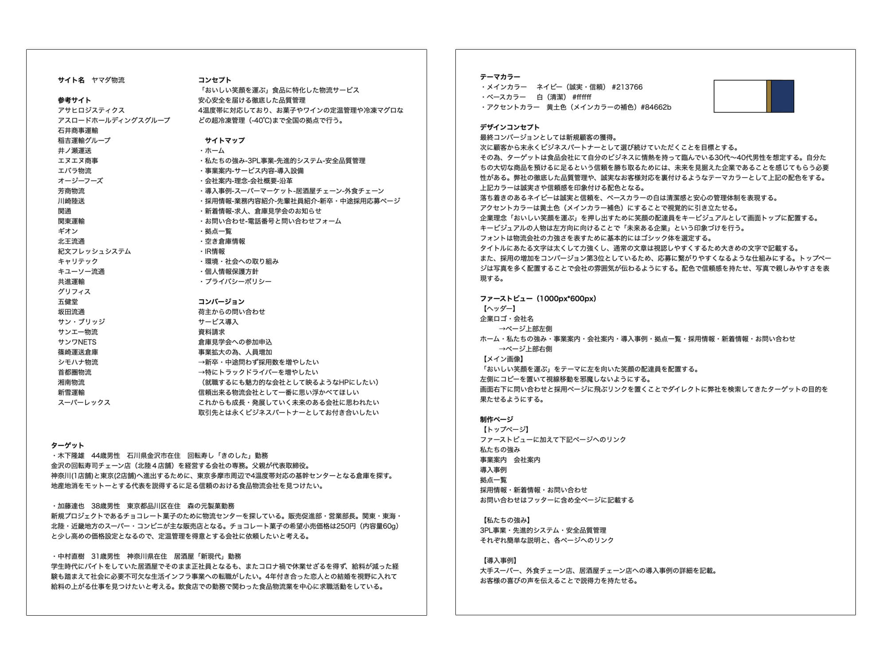
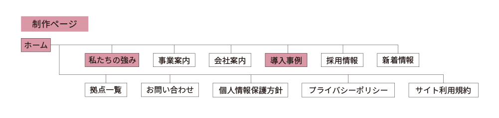
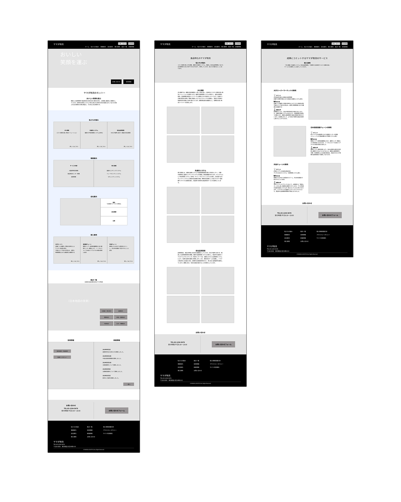
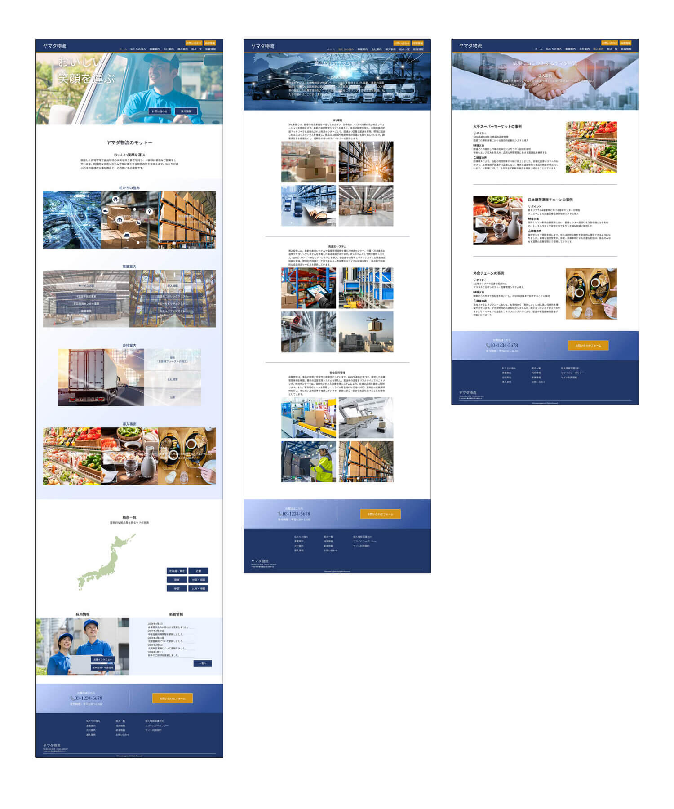

会社概要
「おいしい笑顔を運ぶ」食品に特化した物流事業。安心安全を届ける徹底した品質管理を会社の基盤とする。4温度帯に対応しており、お菓子やワインの定温管理や冷凍マグロなどの超冷凍管理（-40℃)まで全国の拠点で行っている。
制作期間
2024年06月01日～2024年07月10日
作業範囲
- 企画・情報収集(5h)
- コンセプトシート(5h)
- ワイヤーフレーム(16h)
- 文書作成(2h)
- 画像処理(1h)
- デザインカンプ(5h)
- HTML(13h)
- CSS(27h)
企画書

サイトマップ

ワイヤーフレーム

サイトの目的
- 1.新規顧客の獲得
- 2.倉庫見学会への参加申込増加
- 3.事業拡大のため採用への応募増加
ターゲット
食品会社にて自分のビジネスに情熱を持って臨んでいる30代～40代の男性を想定。また、求人への応募増加も大きな目標のため転職活動中の男女もターゲットとする。
ペルソナ
-
木下隆雄(44歳男性/石川県金沢市在住/回転寿し「きのした」勤務)
金沢の回転寿司チェーン店（北陸４店舗）を経営する会社の専務。父親が代表取締役。神奈川(1店舗)と東京(2店舗)へ進出するために、東京多摩市周辺で4温度帯対応の基幹センターとなる倉庫を探す。地産地消をモットーとする代表を説得するに足る信頼のおける食品物流会社を見つけたい。
-
加藤達也(38歳男性/東京都品川区在住/森の元製菓勤務)
新規プロジェクトであるチョコレート菓子のために物流センターを探している。販売促進部・営業部長。関東・東海・北陸・近畿地方のスーパー・コンビニが主な販売店となる。チョコレート菓子の希望小売価格は250円（内容量60g）と少し高めの価格設定となるので、定温管理を得意とする会社に依頼したいと考える。
-
中村直樹(31歳男性/神奈川県在住/居酒屋「新現代」勤務)
学生時代にバイトをしていた居酒屋でそのまま正社員となるも、またコロナ禍で休業せざるを得ず、給料が減った経験も踏まえて社会に必要不可欠な生活インフラ事業への転職がしたい。4年付き合った恋人との結婚を視野に入れて給料の上がる仕事を見つけたいと考える。飲食店での勤務で関わった食品物流業を中心に求職活動をしている。
デザインカンプ

デザインについて
全体のコンセプト
顧客から「自分たちの大切な商品を預けるに足る」という信頼を勝ち取るために最も重要なことが信頼性だと考える。また、徹底した品質管理や誠実なお客様対応を裏付けるような落ち着いた印象を持たせるためにメインカラーは紺色を選定。
カラー
徹底した品質管理や誠実なお客様対応を裏付けるようなテーマカラーを設定。落ち着きのあるネイビーは誠実と信頼を表現するコーポレートカラーであり、これをメインカラーとする。ベースカラーの白は清潔感と安心の管理体制を表現。アクセントカラーは暗めの黄色（メインカラー補色）にすることで視覚的に引き立たせる。
フォント
物流会社の力強さを表すために基本的にはゴシック体を選定。タイトルにあたる文字は太くして力強く表現。通常の文章は視認しやすくするため大きめの文字で記載。
コーディングについて
コードは他の方が見やすいようにインデントに統一感を持たせ可読性を高めることを意識。また、セマンティック性の高いマークアップをするために、ワイヤーフレーム制作段階でsectionやarticleで制作できるような構造を心がけた。